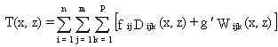

4.2 TOTAL DEPOSITION
The
deposition to surfaces can occur as the result of both wet- or dry-removal
processes. Wet removal is caused by the scavenging and deposition of the
contaminant by precipitation or cloud droplets. Dry deposition is the direct
deposition of the airborne contaminant onto a surface by processes such
as impaction, sorption, and gravitational settling. The total deposition
for wet and dry processes provides surface contaminant levels for the overland
transport pathway and also provides the basis for evaluating ingestion
exposures from the atmospheric pathway.
The total deposition to the surface is input to the exposure component
of the MEPAS model. The total deposition at a specified location is computed
as the sum of the wet- and dry-deposition fluxes to the surface:

(58)
where
T(x,z) = total surface concentration (g/m2)
Dijk(x,z) = dry-deposition flux (g/m2)
Wijk(x,z) = wet-deposition flux (g/m2) for wind speed
(i), stability class (j), and contaminant form (k)
g/ = climatologic fractional frequency of occurrence of the
indexed precipitation conditions within the specific direction (dimensionless).
The formulations of the dry and wet deposition
models are discussed below in Sections 4.7 and 4.8, respectively.